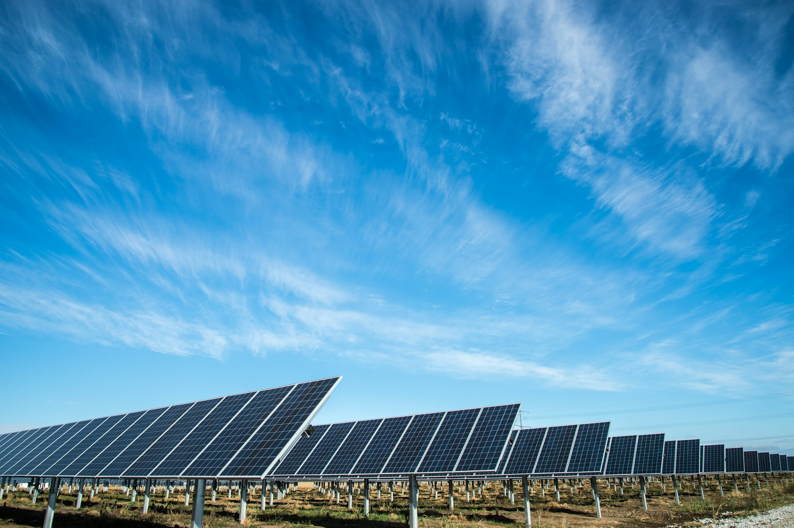
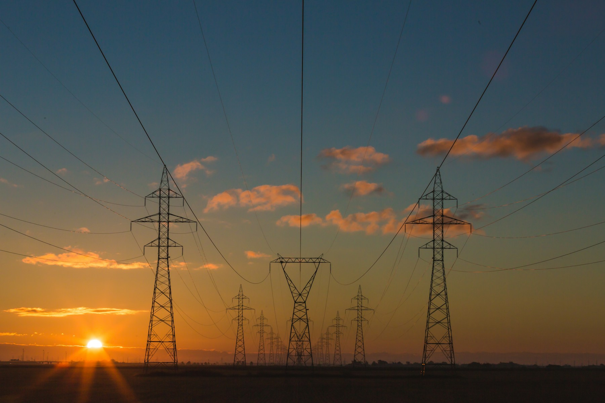

進能服進軍再生能源售電業
董事會決策規劃報告 v3
定位企業客戶入口｜預算封頂進入｜雙軌商品對沖｜平台共同開發
建議封頂進入，雙軌商品，平台共建
定位為「企業客戶入口」：三年 3,000 萬封頂，採「選項丙」防超支；L1 價差為通路取得成本。
首期試點規模
預算封頂上限
共同開發模組
每家客戶 CAC
來源：董事會決策規劃報告 v3 §1.1、§1.2

POXA 會議揭露產業實務與彈性分配代價
來源：2026-02-13 POXA 會議記錄；報告 §0、§5.2
三年 3,000 萬預算硬約束：採「選項丙」防範超支
平台共建降至 400 萬 (釋出 100萬)
砍 Phase 3 保留款，不影響核心功能
試點規模下修至 15–20 GWh (釋出 150萬)
減少營運資金占用與餘電風險
甲 ＋ 乙 併行採行 (釋出 250萬)
緩衝回到 192 萬 (6.4%)，三年 2,808 萬
申請上限提高至 3,300 萬 (釋出 300萬)
違反封頂紀律，削弱管控價值
⚠️ v3 試算發現硬約束： 若「完整試點 + 500萬平台共建」同時執行將超支 58 萬，必須採取「選項丙」以維護 3,000 萬封頂紀律！
來源：報告 §5.4、§5.5
台積電採購瓶頸與賣方市場鬆動
彈性分配取消二次匹配，餘電須 15 分鐘即時用掉
惡化純光電單位經濟 (餘電率升至 15%)
純光電轉彈性分配後 R1 下滑；百貨配適高、24h工廠低
客戶篩選須加入「負載形狀維度」
台積電綠電採購已達瓶頸，售電業開始出現餘電
上游賣方市場鬆動，採購議價能力提升
300+ 光電企業轉自發自用，餘電售台電僅 3.6 元
開啟進能服低成本「餘電聚合」供給池
商業條款差異使匹配複雜，部分同業仍採人工匹配
軟體匹配能力是真實差異化護城河
來源：2026-02-13 POXA 會議記錄；報告 §2、§8.1
雙軌商品設計 (G/F)：用商品 F 對沖商品 G 的餘電風險
來源：報告 §3.3、§3.4
加入「負載形狀維度」的 4 大客群開發矩陣
-
P1
既有 O&M/EPC 中的白天型客戶 (優先窮盡) 單班廠、園區、商辦；高配適 + 有信任；適用商品 G 或 F
-
P2a
百貨、量販、連鎖通路、學校、醫院 (冷開發) 最高配適但無關係，CAC 較高；P1+P2b 不足 15 GWh 時啟動
-
P2b
既有 24 小時工廠客戶願接受低 R1 者 (關鍵對沖) 低配適但有信任；以低價商品 F 換取其吸收餘電
-
P3
24 小時工廠且要求高 R1 (否決不接) 低配適且要求高；不主動開發——純光電下承諾做不到
來源：報告 §4.2、§4.3
雙軌加權每度淨貢獻 0.11 元推導
| 項目 | 金額 | 說明 |
|---|---|---|
| 下游加權售價 | 5.20 | G 高 F 低加權 |
| 上游加權採購 | -4.44 | 0.8×4.55 + 0.2×4.00 |
| 毛價差 | 0.76 | 較 v2 0.65 改善 0.11 |
| 法定轉供費 | -0.3052 | 2026 全年費率 |
| 餘電與補量損失 | -0.13 | 彈性分配代價 |
| 每度淨貢獻 | +0.11 | v2 為 0.03 元 |
來源：報告 §5.1、§5.2 (假設：一般轉供 70%／彈性 30%；一般 PPA 80%／餘電 20%)
20 GWh 規模下 4 大損益情境試算
| 情境名稱 | 年貢獻 | 固定成本 | 年損益 |
|---|---|---|---|
| A. 僅訂閱 POXA | 220 | 685 | -465 |
| B. 含平台共建 (建議) | 220 | 818 | -598 |
| C. 餘電聚合達 40% | 440 | 818 | -378 |
| D. 25 GWh 樂觀打平 | 875 | 818 | +57 |
來源：報告 §5.3；固定成本含 2–3 FTE 495萬 + 系統與代操 100萬 + 平台攤提 133萬 + 法務營運 90萬
300+ 既有案場餘電聚合與背靠背防線
優勢對比： 一般售電業需冷開發且缺乏發電數據；進能服擁有 300+ 既有信任客戶與 O&M 監控資料，預測最準、議價最有優勢！
來源：報告 §6.1、§6.2、§6.3
400 萬平台共建模組與 6 大必要護城河條款
✅ 已成熟，服務前十大售電業
Phase 1 委由 POXA 訂閱 (100萬)
❌ 明確表示沒有發電端能力
Phase 2 共同開發 (250萬，上限400萬)
❌ 明確排除，僅丟 ERP
採用 ERP ＋ 外部專業代操
❌ 未提及
進能服團隊自理，不外包
來源：報告 §7.1、§7.2、§7.3
大自然能源電業口徑統一與關係人風險隔離
來源：董事會兩次確認；報告 §9.1、§9.2、§9.3
以 Gate 換取選擇權，嚴格控管 3,000 萬預算
來源：報告 §10 (Phase 0 負責人 1.0 FTE 須明確卸下現職)
董事會只需追 12 個指標，就能看見規模、現金與履約
商業與客戶
首期試點規模15–20 GWh
供給／銷售比≥ 1.10×
單一買方上限≤ 30%
單一供給上限≤ 35%
財務與現金
每度淨貢獻≥ 0.10 元
客戶取得成本 (CAC)≤ 300 萬元
三年累計投入≤ 3,000 萬元
DSO≤ 45 天
營運與平台
餘電去化率≥ 85%
帳單正確率≥ 99.9%
T-REC 錯配0 筆
POXA 資料隔離100% 合規
來源：報告 §1.2、§5.4、§10 Gate 2
董事會 13 項決議草案與 Phase 0 9 大 DD 清單
原則同意進入以「企業客戶入口」為單一主要目的；試點期預期年虧 465–632 萬元。
核定三年上限 3,000 萬（含平台共建 400萬）。採選項丙投入 2,808 萬，緩衝 192 萬 (6.4%)。
6692 本體申照，不採第三方代售。
再次確認大自然無股權關係，法務出具書面確認並統一對外口徑。
指派專責負責人 1 人，明確調整其現職職掌，6 個月內完成 Phase 0。
核准 POXA 平台合作 (400萬)，IP共有、獨家期、資料權未合意前不得開發。
試點上限 15–20 GWh、單一買方 ≤ 30%、單一供給 ≤ 35%、首批合約 3–5 年。
同意商品 G 與 F 雙軌並行；若 Gate 0 雙軌不可行則退回單軌。
餘電聚合為輔助供給，上游採無保證量，下游無補量請求權。
售電合約必含背靠背 8 項、change-in-law / pass-through 與可轉讓條款。
來源：報告 §12 董事會決議草案（濃縮版）與 §13 尚待回答問題
要決定的不是多一張牌照，
而是是否控制下一個能源服務入口。
建議：核准 Phase 0 (投入 ≤ 280萬)，90 天後以 Gate 0 成果決定是否進入申照與建置。
能源署｜電業法與電業登記規則｜T-REC｜台電轉供規範｜POXA 會議記錄 (2026-02-13)
能源署售電業名單 T-REC 交易資料 進能服公開資料 本簡報為事業規劃與決策支援，不取代法律、會計或主管機關個案意見。